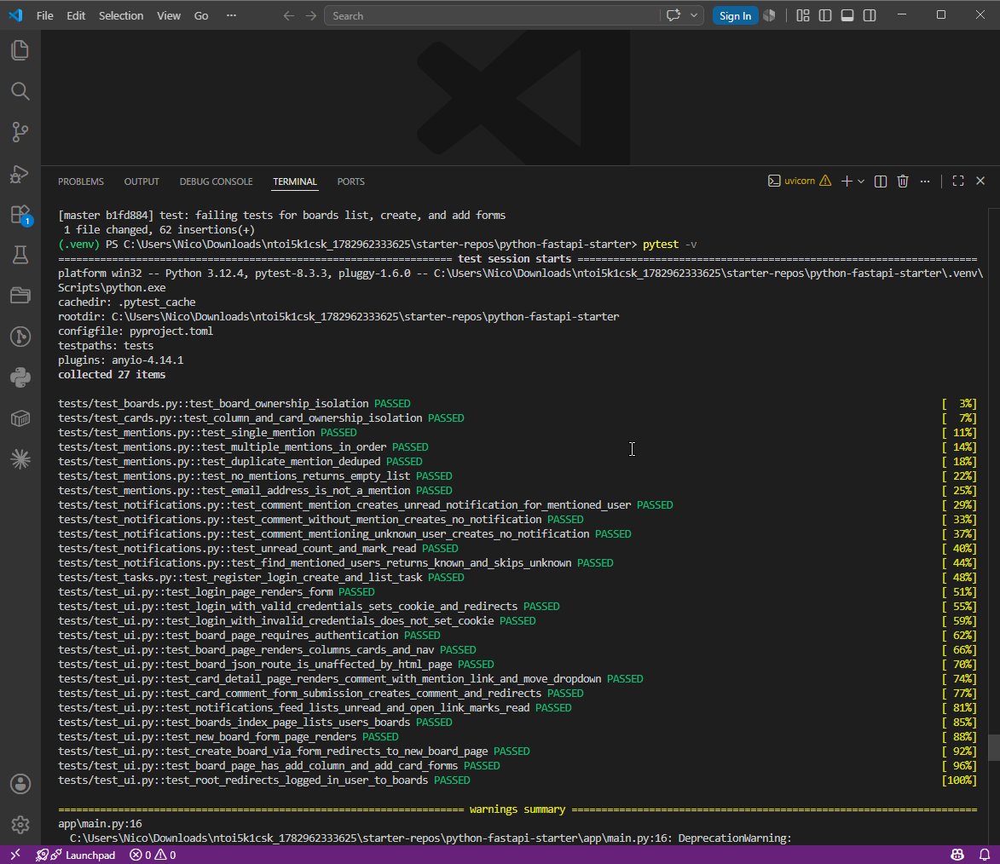
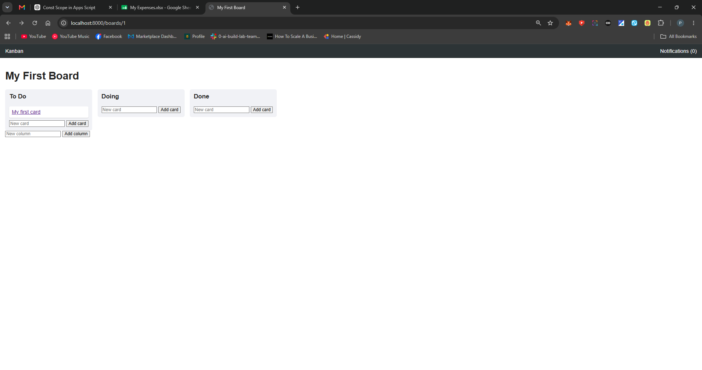
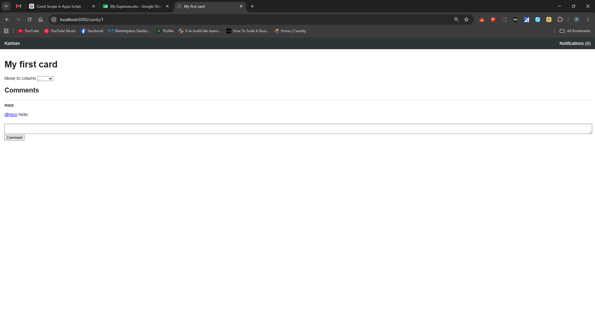
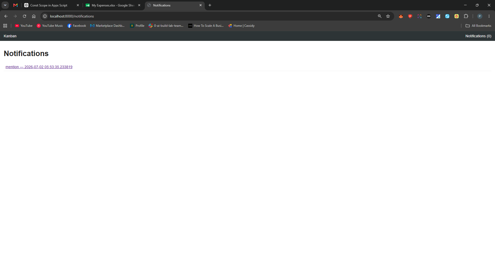

1 Agents & plugins used
The workflow was run through Claude Code with an explicit phase-by-phase discipline. Each tool was chosen to match the phase it served:
| Tool / agent | Phase | Why |
|---|---|---|
/init | CLAUDE.md | Scanned the repo and drafted a project CLAUDE.md. Output was reviewed line by line and trimmed — boilerplate removed, project-specific quirks added (see notes). |
| Plan mode / planning subagent | Plan | Broke the work into numbered, time-estimated steps and flagged the riskiest ones (mention parser, notification creation, transitive card ownership) before any code. |
| General-purpose subagent | Architecture | Produced the technical architecture doc — ER model, endpoints table, state-flow narrative, and explicit tradeoffs. |
| Claude Code (main) | TDD implementation | Drove the failing-test-first loop for each target: write the test, run it, watch it fail, then implement. One target at a time to keep the git history honest. |
No third-party plugins (superpowers / cavern) were installed; the architecture phase used a subagent instead, which the assignment permits.
2 Design & planning docs
- design/design-brief.md — wireframes, component list, user flows
- docs/plan.md — 11 numbered steps, time estimates, risk flags
- docs/architecture.md — ER diagram, endpoints, state flow, tradeoffs
- docs/claude-md-manual/ and docs/claude-md-init/ — CLAUDE.md (manual + /init)
3 Test results
22 tests, all passing. Required TDD targets covered: mention parsing (regex + user lookup), notification creation, and board/column/card CRUD authorization.
| Suite | Focus | Tests | Result |
|---|---|---|---|
| test_mentions.py | Mention parser (incl. email edge case) | 5 | PASS |
| test_notifications.py | Mention→notification, unread count, mark read, user lookup | 5 | PASS |
| test_boards.py | Board ownership authorization (404 not 403) | 1 | PASS |
| test_cards.py | Column + card transitive ownership | 1 | PASS |
| test_ui.py | Cookie auth, HTML pages, comment form, feed | 9 | PASS |
| test_tasks.py | Starter auth + task CRUD (regression) | 1 | PASS |

pytest -v — full suite green.4 Git log excerpt
Each feature was committed as a failing test: then its feat: —
the tests-first pattern is visible top to bottom.
9b593e5 feat: add boards list, create board, and add-column/card forms b1fd884 test: failing tests for boards list, create, and add forms cfb20f4 feat: add server-rendered UI templates and cookie auth 039d0c1 test: failing tests for server-rendered UI ab115f8 feat: mark notifications read and expose unread count 6d9acf4 test: failing test for notification read + unread count fab658b feat: create notifications when a comment mentions a user 10becb2 test: failing test for notification creation on mention ca1636c feat: implement column and card CRUD with transitive ownership d31ca41 test: failing test for column and card ownership authorization 521c3e0 feat: implement board CRUD with ownership authorization 8e39590 test: failing test for board ownership authorization 4b03fc1 test: failing test for mention parser 17e7364 docs: add architecture (ER diagram, endpoints, state flow, tradeoffs) 48beeda docs: add implementation plan with risk flags 44ac512 docs: add design brief (wireframes, components, user flows) c3b826d docs: add CLAUDE.md for repo guidance 2e84234 chore: fix fresh-clone deps (pin pydantic 2.9.2, bcrypt 4.3.0); green test suite
5 Built UI


@nico rendered as a link to the user's profile.
6 Reflection
The biggest surprise was that the "fresh clone" was broken before any feature work began:
the starter left pydantic and bcrypt unpinned, so pip pulled versions too new
for SQLModel 0.0.22 and passlib 1.7.4, and the app wouldn't even boot. Pinning both (2.9.2 / 4.3.0)
and matching Python 3.12 fixed it — and that quirk became the most valuable line in the project CLAUDE.md,
exactly the kind a fresh model could never guess. The TDD loop paid off most on the mention parser, where
forcing an email-address edge case into the failing test first meant the naive @(\w+) regex
never survived. If I did it again I'd use git add -A rather than git commit -am
from the start, since -am silently skipped new files and briefly left implementation code
out of its intended feat: commit.
Generated for Track 1 (Beginner) · Kanban with Comments & @Mentions.